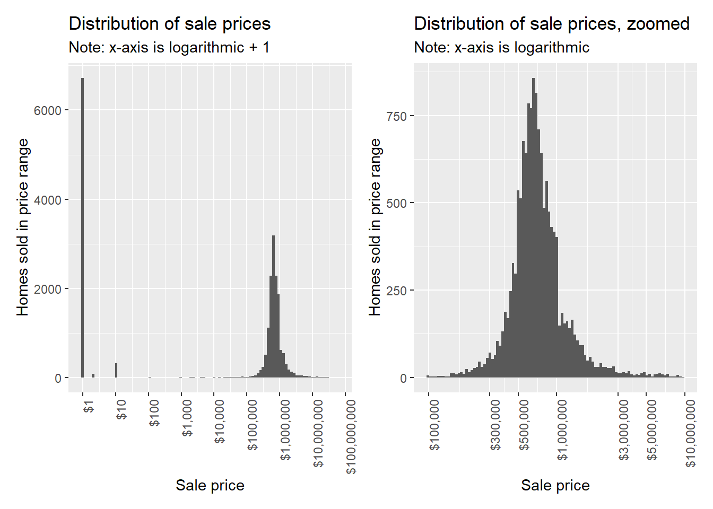
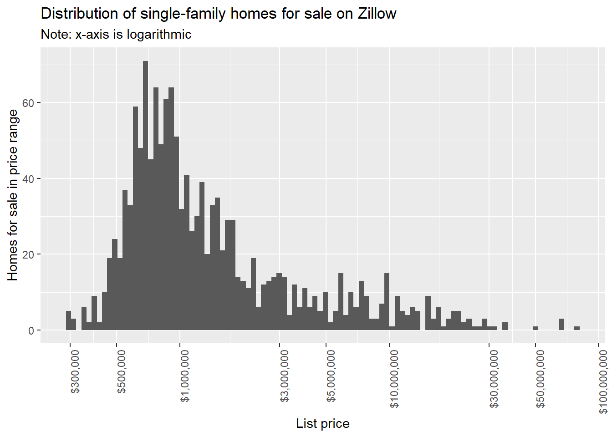
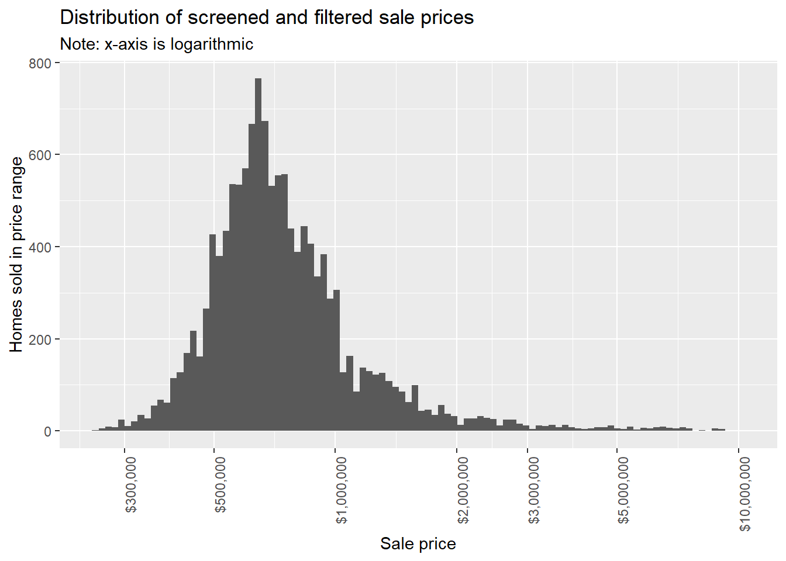

The first major data component is the NYC Department of Finance data on all property sales for 2021. This data is composed of five Excel spreadsheets, one for each borough.1 The spreadsheets have a common structure, so writing a function to import and select columns from them cuts down on redundant code.
Code
read_sales_data <-function(path) { readxl::read_xlsx(# Specify pathpath = path,# Specify tidy column namescol_names =c("borough_num","neighborhood","bldg_class_cat","tax_class_now","block","lot","easement","bldg_class_now","address","apt","zip","res_unit_sale","comm_unit_sale","total_unit_sale","land_sq_ft","gross_sq_ft","year_built_sale","tax_class_sale","bldg_class_sale","sale_price","sale_date" ),# Skip headerskip =8 ) |> dplyr::filter(# Filter for single-family home sales... bldg_class_cat =="01 ONE FAMILY DWELLINGS"&# ...with a single unit sold... total_unit_sale ==1 )}
After importing all five spreadsheets, we compile the data from all five boroughs into a single table.
An important next step is to create a Borough-Block-Lot (BBL) identifier for each row by combining the separate elements in the sales data. The BBL system is the city government’s method of uniquely identifying each lot in the entire city. We will use the BBL IDs to compile the data from the various sources that are available.
Each unique sale is identified with a new column consisting of BBL plus date.
Errors in the data
The sales data has several problems. First, there are several types of errors that must be screened for:
Misclassified lots (condos in multi-unit buildings marked as single-family homes, empty lots classified as homes etc.)
Missing information
Inaccurate information
Sales with these types of errors are excluded.
Second, there are a small number of houses that do not appear to be in habitable condition, and are sold for far less than market price. These houses were all discovered during the screening process described below, and are also excluded.
Filtering the sales data
Sweetheart deals and transfers
The third type of problem with the data, and by far the largest, is that there are a large number of sales that are clearly not sold in arms-length sales on the open market. Including these sales in the dataset degrades the predictive power of any model attempting to predict market prices, so they should be excluded.
Note the huge number of 0-dollar sales on a histogram of all single-family home prices (below).

The data clearly contains no-cost transfers and sweetheart deals (homes sold for $5000 or even $10) between family, friends, business entities, and so on.
Filtering out non-arms-length sales
The market-rate prices we are predicting more specifically described as arm’s-length sales – sales where both parties are trying to maximize their advantage in the sale. In real estate, there are a number of different kinds of non-arms-length sales:
Auctions
Bank-owned properties
Short sales
Cash-for-homes services
These sales and others should be excluded from the dataset.
While it is impossible to positively identify every sale in this category, we can create a filter to identify candidates. To do this, we use data scraped from live listings on Zillow2 to develop an understanding of what actual market sales look like.

The distribution of single-family homes listed for sale on Zillow looks similar to that of our sales data, though with a “thicker” upper tail.
The Zillow data allows us to answer two important questions:
What is the minimum one can expect to pay for a house anywhere in the city? The sales for $5000 are obviously deals of some kind, but what about $100k sales? Based on the Zillow data, any house sold for under $250,000 is almost certainly not an arm’s-length sale and should be excluded.
What is the range of prices one can expect to pay for a house in a given neighborhood? Prices are not uniform across the city, so the filter should be responsive to local sub-markets. Based on the Zillow data, for any given neighborhood, houses that are sold for less than 45% of the neighborhood median sale price are likely sales that should be excluded.
We build a filter that catches all homes under $250k and all homes that were sold for less than 45% of the median price in the local area. Two measures of “local area” are used – ZIP code and neighborhood – and produce somewhat different, yet overlapping, sets of results.
Screening the filter results reveals that a small number of sales that appear to be on-market have been picked up by the filter, but overall the filter is reasonably effective.
Screening sales manually
It is reasonable to assume that the filter did not catch all homes sold off-market. The next task is to manually screen a portion of the remaining sales by searching for the address on Zillow and other websites. Over time, an intuition of what counts as a non-arms-length sale can be developed. Broadly speaking, homes that have one or more of the following attributes are excluded:
Listed as an auction, short sale, bank-owned or real-estate-owned property, in foreclosure etc.
Listed with language indicating a fixer-upper or other problems
Showing visible signs of deterioration or abandonment
Sold for substantially under for-sale or recently-sold homes in the area
Sold for less than a previously-recorded sale
The screening process is time-intensive, so not every home can be screened. The focus was put on homes under $500k, homes that stood out in some way during data exploration, and homes that were identified as over- or under-predictions at some point during the model building process. Some random screening of homes was done to counter some of the biases inherent in this method of screening. About 1000 sales were screened in this manner, and 450 sales were excluded based on the results.
Capping the distribution
Another important filter for the data involves excluding homes over a certain price. The statistical reason for doing this is so that ultra-high-end outliers do not exert undue leverage during the modeling process. More conceptually, at some point in the price distribution, homes become out of reach of everyone except the ultra-wealthy, and thus the “market” for these homes is conceptually distinct from the market for homes sold for $500,000 to $1,000,000.
For this project, the prices will be capped at $10 million, a 40x multiple of the minimum price included. The decision to cap the prices here is ultimately arbitrary and may be higher than is truly useful – the principle of not discarding potentially useful data was important to the choice of where to cap.

The distribution of the screened and filtered sale price variable is similar in shape to both the original data and the Zillow data, meaning no extreme distortions were introduced during the process. An artifact visible in this graph that we can call the “million-dollar shelf” will show up more clearly in later graphs.
Footnotes
“Detailed Annual Sales Reports by Borough - 2021 New York City Sales Data” <https://www1.nyc.gov/site/finance/taxes/property-annualized-sales-update.page> “All Sales From January 2021- December 2021. Property Tax System (PTS) data as of 03/11/2022.” Retrieved July 14 2022↩︎